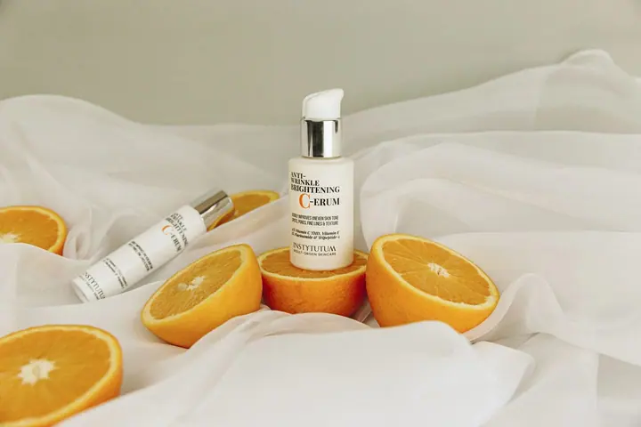

Svatební fotografie
Elegantní svatební fotografie v editorial stylu, s přirozenými emocemi a bez nepřirozených póz. Balíčky mají 3 až 10 hodin focení a nabídku vám vždy připravím podle vašich představ.


Jmenuji se Elena Tokareva a jsem svatební fotografka v Praze. Fotím svatby, páry i rodiny s dětmi v elegantním editorial stylu inspirovaném módní fotografií. Působím v Praze a fotografuji po celé České republice i Evropě.
Více o mně
„Mým cílem není pouze fotografovat, ale vytvořit prostředí, ve kterém se budete cítit přirozeně a v klidu.“
— Elena Tokareva
Elegantní svatební fotografie v editorial stylu, s přirozenými emocemi a bez nepřirozených póz. Balíčky mají 3 až 10 hodin focení a nabídku vám vždy připravím podle vašich představ.
Klidné a jemné focení v čistém, světlém stylu, klidně i s partnerem. Ráda vám pomohu s výběrem outfitu.
Focení rodiny a dětí v ateliéru, venku nebo u vás doma, včetně focení novorozenců. Balíček Rodina a děti zahrnuje 1,5 hodiny focení, 100 upravených fotografií a mini video do 7 dnů.
Individuální focení je focení pro sebe, pro lepší sebevědomí a pohled na sebe z jiné perspektivy. Nemusíte přemýšlet, jak se postavit, pomohu vám uvolnit se a ukázat vaši jedinečnost.
Fotografie jsou ilustrační
Jako fotografka jsem romantická i vážná. Můj styl spojuje přirozenost a eleganci a chci, aby se moje fotografie předávaly z generace na generaci a staly se rodinnými poklady.
Vaše svatba není jen soubor krásných fotografií. Je to příběh, emoce a jedinečný okamžik. Většina mých párů nikdy předtím nestála před profesionálním fotoaparátem, proto vás jemně vedu a nenutím vás do nepřirozených póz. Vy si užíváte svůj den, já se postarám o fotografie.
V letech 2022 a 2024 jsem fotila pro knihy Julie Balabanové „Etiketa pro elegantní ženu“ a „Dress code pro elegantní ženu“. Byla to pro mě velká čest a skutečná inspirace. Kromě svateb fotím těhotenství, rodiny, newborn a portréty a vedu také školení pro fotografy.

Napíšete mi o svých představách a já vám připravím nabídku na míru podle počtu hodin, místa konání a toho, co chcete zachytit.
Společně projdeme harmonogram, aby zbyl čas na přípravy, portréty, skupinové fotografie i odpočinek. Ráda vám doporučím i ověřené svatební profesionály.
Pracuji v klidu a jemně vás vedu, aby fotografie působily přirozeně. Vy se můžete soustředit jen na sebe a své blízké.
Všechny fotografie autorsky upravím a předám vám je ve vlastní online galerii. Svatební fotky dodávám do 14 dnů.
Nemusíte nic umět. Většina mých párů nikdy předtím nestála před profesionálním fotoaparátem. Jemně vás povedu, aby fotografie působily přirozeně.
V rámci České republiky si za dojezd nic neúčtuji. Výjimkou jsou svatby a focení v zahraničí, kam za vámi ráda přiletím po předchozí domluvě.
Ano. Dobře naplánovaný harmonogram je jedním z nejdůležitějších kroků pro klidný průběh dne. Pomohu vám rozvrhnout čas tak, aby vše proběhlo bez zbytečného stresu.
Svatební fotografie dodávám do 14 dnů. U rodinného, párového a newborn focení je doba úpravy do 7 dnů.